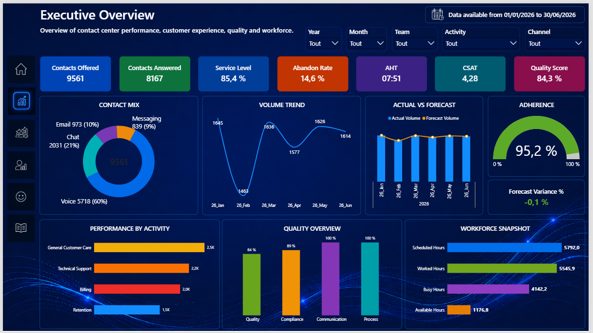

Power BI & reporting
Rapports de pilotage, vues globales et individuelles, navigation, sécurité et maintenance dans Power BI Desktop et Service.
Power BI
KPI
RLS
Dataflows
Data Analyst · Power BI · Business Intelligence
Je conçois des solutions Power BI fiables, maintenables et orientées métier. De la préparation des données au suivi des KPI, je sécurise chaque étape : grain, clés, qualité, modèle et calculs.
Casablanca, Maroc · Disponible à distance
Expertise
Une approche complète qui relie compréhension opérationnelle, qualité des données et développement BI.
Rapports de pilotage, vues globales et individuelles, navigation, sécurité et maintenance dans Power BI Desktop et Service.
Nettoyage, normalisation et consolidation de sources Excel, SharePoint et Dataflows avec Power Query M.
Modèles en étoile, relations, grain, clés et mesures DAX conçus pour limiter les doublons et le double comptage.
Flux de fichiers, notifications et gestion des demandes BI avec Power Automate, Power Apps et SharePoint.
Audits des sources, suivi des actualisations, contrôles de fraîcheur, cohérence des unités et sécurité des accès.
SQL, PowerShell, APIs, Deneb et notions appliquées de Python pour compléter et industrialiser les solutions BI.
Études de cas
Les contextes sont anonymisés. Les aperçus sont des représentations conceptuelles et ne contiennent aucune donnée ni capture confidentielle.

Dashboard Power BI complet pour analyser les ventes, les objectifs, la rentabilité, le stock et la performance commerciale d’un réseau automobile au Maroc.

Solution Power BI 360° pour analyser la performance opérationnelle, les agents, l’expérience client, la qualité, le workforce et le forecast d’un centre de contacts.

Solution Power BI dédiée au pilotage de la performance financière, des budgets, des coûts, des marges et de la rentabilité à travers les entités, régions et business units.

Solution Power BI dédiée au pilotage des ressources humaines, des effectifs, de l’absentéisme, du turnover, de la performance et du parcours collaborateur.

Pipeline analytique automatisé de bout en bout, depuis la réception de fichiers CSV et Excel jusqu’au reporting Power BI, avec contrôles qualité, traitement Python, stockage SQLite et vues SQL dédiées à l’analyse.
Méthode
Clarifier le besoin, les utilisateurs, les règles de gestion et les décisions attendues.
Contrôler les sources, le grain, les clés, les unités, les valeurs manquantes et les doublons.
Construire un modèle lisible, définir les relations et sécuriser les calculs.
Présenter les KPI dans des vues simples, hiérarchisées et orientées action.
Tester, documenter, suivre l’actualisation et accompagner les utilisateurs.
Services freelance
Interventions entièrement à distance, du diagnostic ponctuel à la construction d’une solution complète.
Création, refonte et maintenance de rapports de pilotage lisibles et performants.
Nettoyage et consolidation avec Power Query M, SQL, Excel, SharePoint et Dataflows.
Modèles en étoile, mesures, RLS, optimisation et prévention du double comptage.
Flux, alertes, notifications et gestion des demandes avec Power Automate et Power Apps.
Revue du grain, des clés, mappings, doublons, unités et fraîcheur des sources.
Parcours
Mon expérience de management me permet de traduire les attentes du terrain en indicateurs utiles et compréhensibles.
2023 — aujourd’hui
Conception et maintenance de solutions Power BI pour la performance, la qualité, la productivité, l’adhérence, les ressources et la facturation. Modélisation, DAX, automatisation, RLS, suivi des actualisations et support utilisateurs.
2014 — 2025
Management d’équipe, analyse des KPI, plans d’action, coaching, planification, suivi de l’assiduité et coordination avec les équipes qualité, formation et support.
Formation
Contact
Échangeons sur votre contexte, vos sources et la décision que votre solution BI doit faciliter.